Treinta y ocho temporadas
El club nace en 1988 en el barrio de Villafranqueza, con una pista de tierra, dos entrenadores y treinta chavales. La primera equipación se pagó con una rifa de Navidad.
En los noventa llegan las primeras medallas autonómicas y la escuela empieza a llenarse. En 2004 se abre la sección de running de adultos, que hoy es la más numerosa, y en 2012 la de triatlón.
Desde 2019 el club gestiona además las escuelas municipales de atletismo y triatlón y el programa de deporte adaptado, con la misma idea de siempre: que entrenar sea un plan al que apetezca volver.
La cronología del club
Fundación del club en Villafranqueza, con una pista de tierra, dos entrenadores y treinta chavales.
Primera medalla autonómica en categoría cadete.
Nace la sección de running de adultos. Hoy es la más numerosa del club.
Sección de triatlón y primeras ligas por equipos.
El club asume las escuelas municipales de atletismo y triatlón y el programa de deporte adaptado.
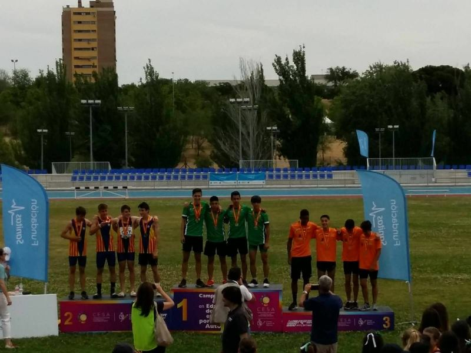
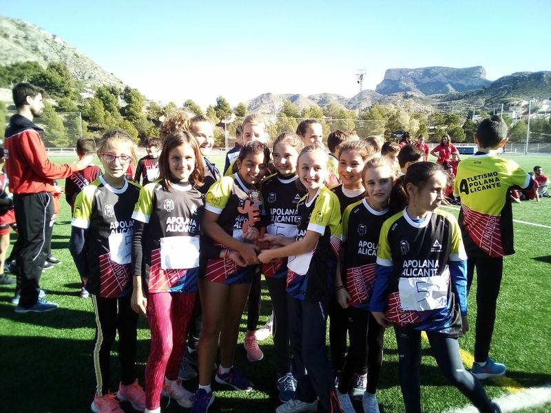
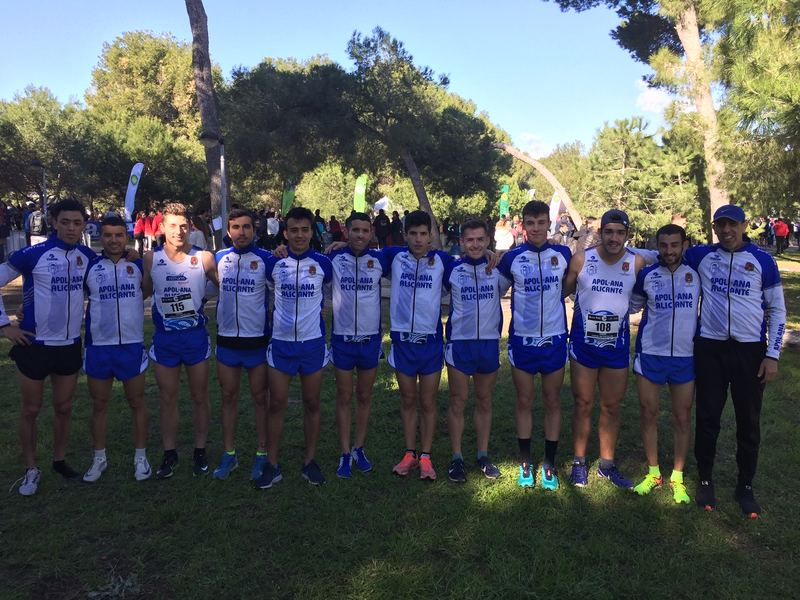
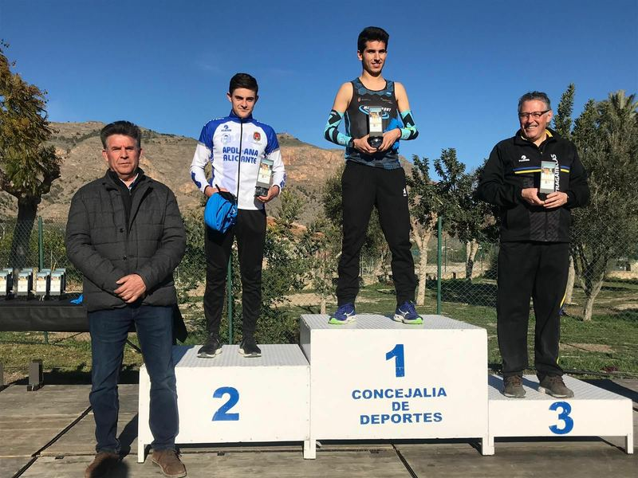
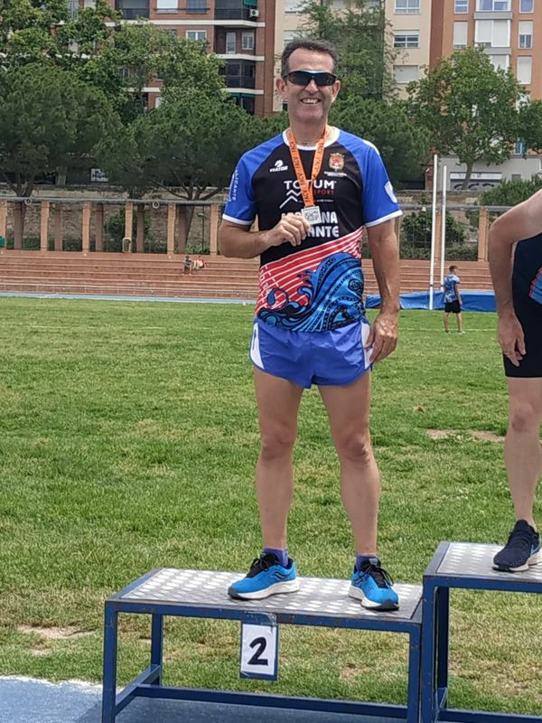
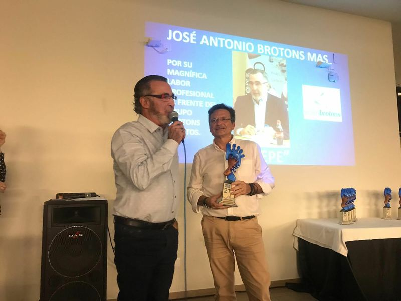
Autonómico de carrera vertical: la montaña deja de ser solo salidas de fin de semana y empieza a competir.
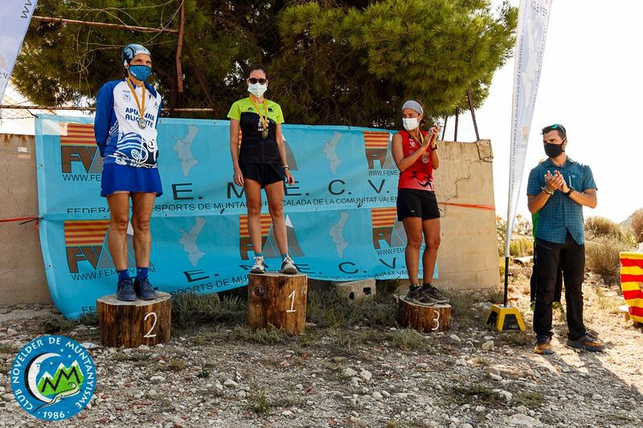
El club cumple treinta y cinco años y lo celebra con toda la gente que ha pasado por él.
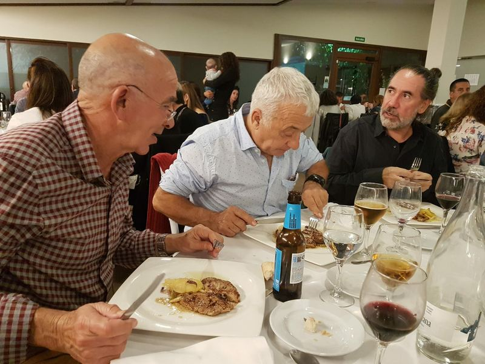
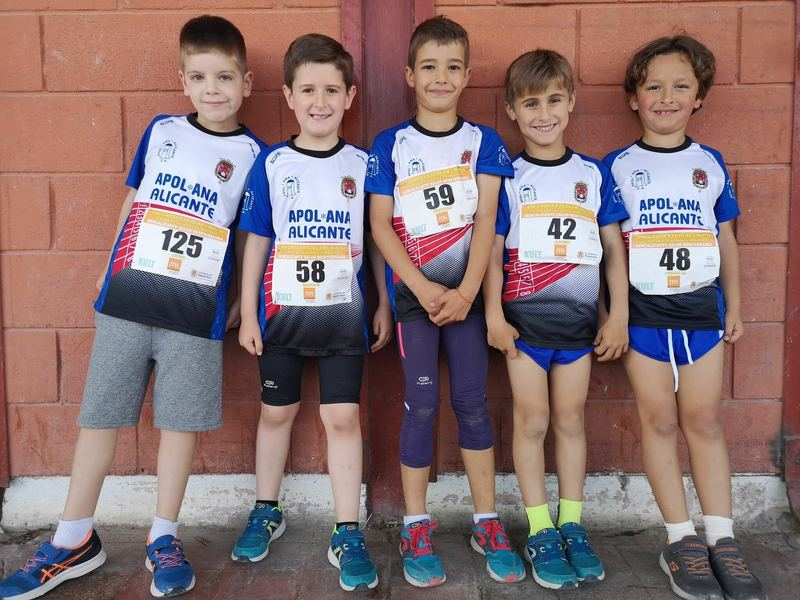
Gala de los treinta y seis años y comida de hermandad de fin de temporada.
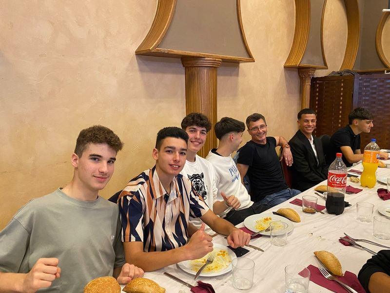
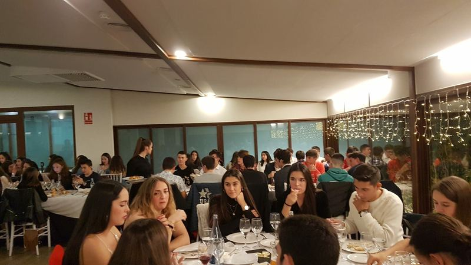
420 atletas y siete secciones en activo.